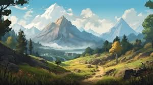

Time to adventure
there are many places to journey to in the clockwork kingdom such as
the springs of zarshi a beutiful springs are said to make you younger
the forests of auris full of bioluminesent plants and animals they say that if you wander deep anuff you will see the dead spirits wandering the forest OoOoOoOoh?
the mountains of aveus though beutiful legend have it that theres an ancient machin lurking in the heart of the mountain and if you venure to the highest peak when you go down you will find yourself 1-5 years in the past or the near future.

and the valley of DEATH! uh i mean the valley of uh trees dont go here EVER please!
and finaly the capitol of chronos wiped out during the torential rains we have just started reconstuction and wre making good work too.
the mech workshop of R.I.M. is still operational to this day being run by humans and atuomatons and other inteligent species that explains the new mechs being found everywhere.

and all of it is conected by our state of the art train system that the chronazians have been working on for quite some time well freinds thats it for the clockwork kingdom but ethereal adventures is always expanding so check in soon for more adventures to come and goodbye!